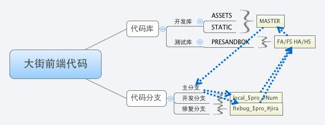

相关链接
图示说明:
-
大街网代码存储
具体分支规范可以参考 dj-git.flow.md
保证主干代码没有人为操作,主干代码的操作全都是自动化
 -
大街网前端开发流程
整体流程为: 开发环境 → 联调环境 → 沙盒环境 → 预发布环境 → 线上环境
- 联调环境 : 后端采用后端开发环境,获取前端分支代码
- 沙盒环境 : 前端提供项目分支名称,QA部署前端代码到沙盒环境
- 预发布环境 : 前端通过合并系统合并分支代码进主干,QA部署前端代码到预发布环境
-
大街网前端代码流转过程
旧:在之前的流程中,`代码管理员`对代码审核后,通过建立'git tag'的方式进行合并和发布,这个虽然也实现了自动化,但还是比较繁琐.
本流程通过两个脚本'/laser/deploy.sh'和'/.git/hooks/post-update'控制
- '/laser/deploy.sh' : 自动更新主干代码,与远程分支代码合并后提交master代码
- '/.git/hooks/post-update' : 对tag进行监听,同步svn,备份前端代码
新:通过`自动合并系统`,只需要点击2个按钮就可以合并分支代码到主干.并且实现了自动安全检测,自动合并svn代码,自动备份代码.通过'自动合并系统
本系统源代码已经放到git仓库里了,查看请访问: http://ued.dajie.com/ued/auto-deploy
本系统主要通过以下文件实现操作:
- '/api/controllers/EchoController.js' : 通过客户端请求调用不同流程,实现全局即时锁定和解锁
- '/workspace/diff.sh' : 进行安全检测
- '/workspace/merge.sh' : 安全合并代码进主干,备份代码,同步svn.在合并代码过程中,会调用'EchoController.js'锁定全局,合并完成后通知解锁